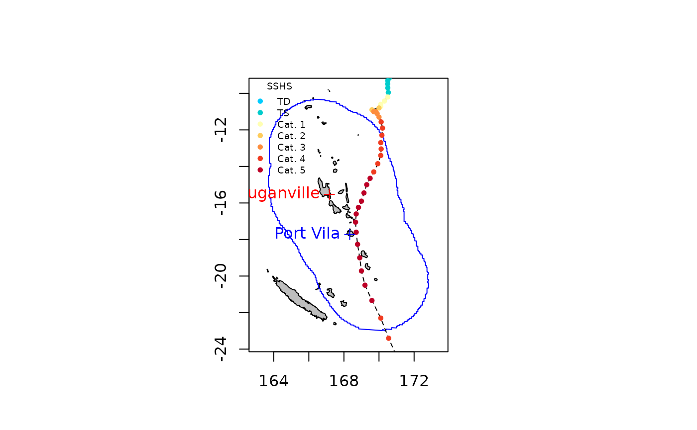
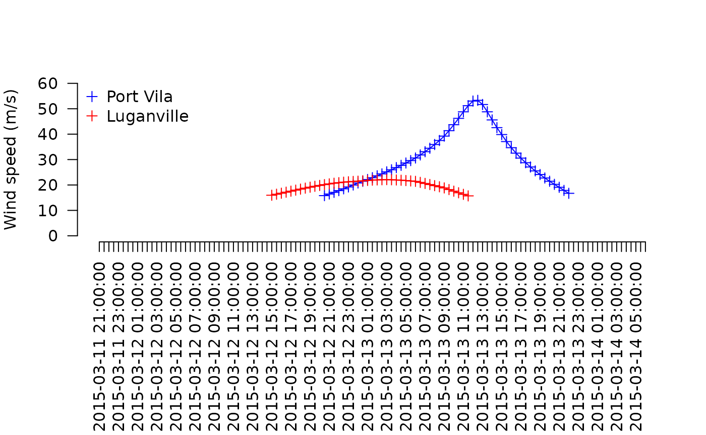
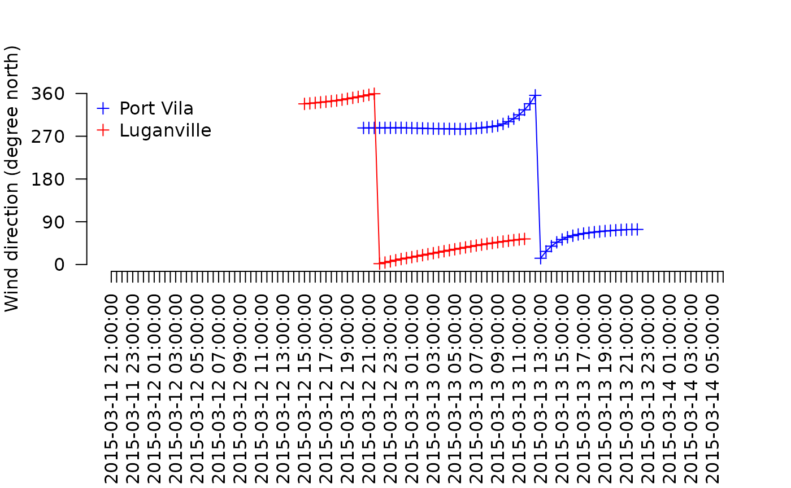

The temporalBehaviour() function allows computing wind
speed and direction for a given location or set of locations along the
lifespan of a tropical cyclone. It also allows to compute to compute
three associated summary statistics: the maximum sustained wind speed
(product="MSW"), the power dissipation index
(product="PDI") and the duration of exposure to winds
reaching defined speed thresholds along the life span of the cyclones
(product="Exposure").
In the following example we use the test_dataset
provided with the package to illustrate how cyclone track data can be
used to compute and plot time series of wind speed and direction and how
to compute summary statistics for specific locations, as described
below.
Computing and plotting time series of wind speed and direction
We compute and plot time series of the speed and direction of winds generated by the topical cyclone Pam (2015) in two of the main cities of Vanuatu, Port Vila (longitude = 168.33, latitude = -17.73) and Luganville (longitude = 167.17, latitude = -15.53). The coordinates of the two locations of interest are provided in a data frame as follows:
df <- data.frame(x = c(168.33, 167.17), y = c(-17.73, -15.53))
rownames(df) <- c("Port_Vila", "Luganville")The track data for Pam nearby Vanuatu are extracted as follows:
sds <- defStormsDataset()## Warning in checkInputsdefStormsDataset(filename, fields, basin, seasons, : No basin argument specified. StormR will work as expected
## but cannot use basin filtering for speed-up when collecting data## === Loading data ===
## Open database... /home/runner/work/_temp/Library/StormR/extdata/test_dataset.nc opened
## Collecting data ...
## === DONE ===
st <- defStormsList(sds = sds, loi = "Vanuatu", names = "PAM", verbose = 0)## The legacy packages maptools, rgdal, and rgeos, underpinning the sp package,
## which was just loaded, will retire in October 2023.
## Please refer to R-spatial evolution reports for details, especially
## https://r-spatial.org/r/2023/05/15/evolution4.html.
## It may be desirable to make the sf package available;
## package maintainers should consider adding sf to Suggests:.
## The sp package is now running under evolution status 2
## (status 2 uses the sf package in place of rgdal)## Please note that 'maptools' will be retired during October 2023,
## plan transition at your earliest convenience (see
## https://r-spatial.org/r/2023/05/15/evolution4.html and earlier blogs
## for guidance);some functionality will be moved to 'sp'.
## Checking rgeos availability: FALSE
plotStorms(st)
points(df$x, df$y, pch = 3, col = c("blue", "red"))
text(df$x, df$y, labels = c("Port Vila", "Luganville"), pos = 2, col = c("blue", "red"), cex = 0.8)
Then the temporalBehaviour() function with the
product = "TS" argument is used to compute time series. By
default the temporal resolution of is set to 1 hour but can be changed
using the tempRes argument. Here we set the temporal
resolution to 30 min with tempRes=0.5 as follows:
TS <- temporalBehaviour(st, points = df, product = "TS", tempRes = 0.5, verbose = 0)With the above specification the temporalBehaviour()
function returns a list of two data frames (i.e., one for each location)
with the wind speed (“speed”), direction (“direction”), indices of the
observations and the date and time of the observation (“isoTimes”).
str(TS)## List of 1
## $ PAM:List of 2
## ..$ Port_Vila :'data.frame': 115 obs. of 4 variables:
## .. ..$ speed : num [1:115] NA NA NA NA NA NA NA NA NA NA ...
## .. ..$ direction: num [1:115] NA NA NA NA NA NA NA NA NA NA ...
## .. ..$ indices : chr [1:115] "28" "28.1" "28.2" "28.3" ...
## .. ..$ isoTimes : chr [1:115] "2015-03-11 21:00:00" "2015-03-11 21:30:00" "2015-03-11 22:00:00" "2015-03-11 22:30:00" ...
## ..$ Luganville:'data.frame': 115 obs. of 4 variables:
## .. ..$ speed : num [1:115] NA NA NA NA NA NA NA NA NA NA ...
## .. ..$ direction: num [1:115] NA NA NA NA NA NA NA NA NA NA ...
## .. ..$ indices : chr [1:115] "28" "28.1" "28.2" "28.3" ...
## .. ..$ isoTimes : chr [1:115] "2015-03-11 21:00:00" "2015-03-11 21:30:00" "2015-03-11 22:00:00" "2015-03-11 22:30:00" ...We use the data frame to draw time series plots for wind speed and wind direction as follows:
par(mar = c(10, 4, 4, 2))
plot(TS$PAM$Port_Vila$speed, type = "l", ylim = c(0, 60), xlab = "", ylab = "Wind speed (m/s)", axes = FALSE, col = "blue")
points(TS$PAM$Port_Vila$speed, col = "blue", pch = 3)
lines(TS$PAM$Luganville$speed, col = "red")
points(TS$PAM$Luganville$speed, col = "red", pch = 3)
legend("topleft", pch = 3, col = c("blue", "red"), legend = c("Port Vila", "Luganville"), bty = "n")
axis(1, at = seq(1, length(TS$PAM$Port_Vila$speed)), labels = TS$PAM$Port_Vila$isoTimes, las = 2)
axis(2, at = seq(0, 60, 10), labels = seq(0, 60, 10), las = 2)
par(mar = c(10, 4, 4, 2))
plot(TS$PAM$Port_Vila$direction, type = "l", ylim = c(0, 360), xlab = "", ylab = "Wind direction (degree north)", axes = FALSE, col = "blue")
points(TS$PAM$Port_Vila$direction, col = "blue", pch = 3)
lines(TS$PAM$Luganville$direction, col = "red")
points(TS$PAM$Luganville$direction, col = "red", pch = 3)
legend("topleft", pch = 3, col = c("blue", "red"), legend = c("Port Vila", "Luganville"), bty = "n")
axis(1, at = seq(1, length(TS$PAM$Port_Vila$speed)), labels = TS$PAM$Port_Vila$isoTimes, las = 2)
axis(2, at = seq(0, 360, 90), labels = seq(0, 360, 90), las = 2)
Maximum sustained wind speed for Port Vila and Luganville can be computed as follows:
max(TS$PAM$Port_Vila$speed, na.rm = TRUE)## [1] 53.312
max(TS$PAM$Luganville$speed, na.rm = TRUE)## [1] 22.112Getting power dissipation index
The power dissipation index is computed using the
product = "PDI" argument as follows:
PDI <- temporalBehaviour(st, points = df, product = "PDI", tempRes = 0.5, verbose = 0)
PDI## $PAM
## Port_Vila Luganville
## PDI 2101.754 335.194Getting duration of exposure
The duration of exposure is computed using the
product = "Exposure" argument as follows:
exposure_SS <- temporalBehaviour(st, points = df, product = "Exposure", tempRes = 0.5, verbose = 0)
exposure_SS## $PAM
## Port_Vila Luganville
## Min threshold: 18 m/s 23.0 16
## Min threshold: 33 m/s 9.5 0
## Min threshold: 42 m/s 5.0 0
## Min threshold: 49 m/s 2.0 0
## Min threshold: 58 m/s 0.0 0
## Min threshold: 70 m/s 0.0 0By default, the function returns the duration of exposure (in hours)
to wind speeds above the thresholds used by the Saffir-Simpson hurricane
wind scale (i.e., 18, 33, 42, 49, 58, and 70 \(m.s^{-1}\)). However, different thresholds
can be set using the wind_threshold arguments. We can use
the thresholds used by the Australian Bureau of Meteorology to rank
tropical cyclones intensity as follow:
wt <- c(17.2, 24.4, 32.5, 44.2, 55.0)
exposure_BOM <- temporalBehaviour(st, points = df, product = "Exposure", tempRes = 0.5, windThreshold = wt, verbose = 0)
exposure_BOM## $PAM
## Port_Vila Luganville
## Min threshold: 17.2 m/s 24 17.5
## Min threshold: 24.4 m/s 16 0.0
## Min threshold: 32.5 m/s 10 0.0
## Min threshold: 44.2 m/s 4 0.0
## Min threshold: 55 m/s 0 0.0